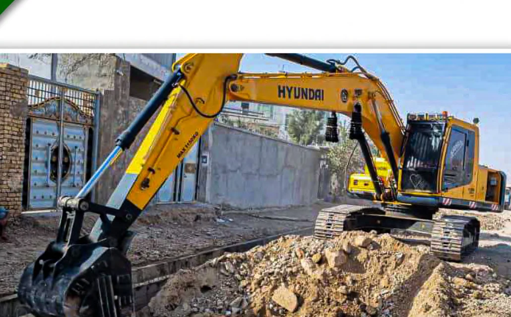
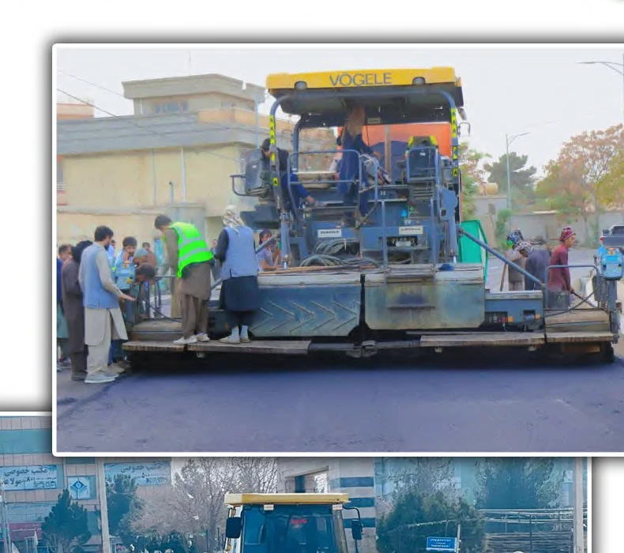

ماشینآلات و تجهیزات
فهرست ماشینآلات مطابق جدول درجشده در پروفایل شرکت.
ظرفیت تجهیزاتی
ناوگان برای پشتیبانی پروژه در ساحه
پروفایل شرکت ۱۸ دسته ماشینآلات و وسایل را با تعداد و وضعیت ثبت کرده است.
| # | ماشین / وسیله | تعداد | وضعیت |
|---|---|---|---|
| 01 | Dumper (Mercedes) | 6 | خوب |
| 02 | Hino Truck | 12 | خوب |
| 03 | Back Hoe / Excavator | 6 | خوب |
| 04 | Loader 966 CAT | 6 | خوب |
| 05 | Roller | 6 | خوب |
| 06 | Low Boy / High Bed | 4 | خوب |
| 07 | Crane | 3 | خوب |
| 08 | Grader | 3 | خوب |
| 09 | Concrete Mixer | 6 | خوب |
| 10 | Vibrator | 8 | خوب |
| 11 | Compactor | 3 | خوب |
| 12 | Water Pump | 8 | خوب |
| 13 | Power Generator 5 KVA and below | 3 | خوب |
| 14 | Lifter | 2 | خوب |
| 15 | Mazda 4000 | 2 | خوب |
| 16 | Tractor | 3 | خوب |
| 17 | Water Tanker | 2 | خوب |
| 18 | Pick-up / Corolla / Prado | 6 | خوب |
عملیات ساحوی
ماشینآلات برای سرعت، کیفیت و کنترل بهتر
لودر، گریدر، رولر، اکسکاواتور، میکسر، تانکر و وسایل حملونقل در پروژههای خاکی، سرکسازی و کارهای ساختمانی نقش اساسی دارند.

